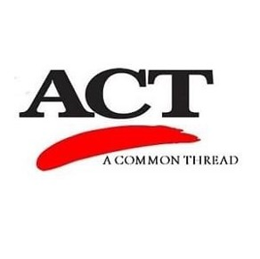

ACT provides in-community (55 and older) free self-serve farmer markets to remote locations, senior living apartments, mobile home courts and facilities across Pierce, Thurston, Lewis and King County. We call ourselves “Produce Wranglers” as we serve a fabulous buffet of produce, fruits and vegetables which we gleaned and purchased from local farmers and small businesses all over Washington. Our distribution model allows seniors and people with disabilities the right to choose food which meets their dietary and cultural needs. Our model allows for us to go to them, creates avenues for independence, socialization and even an opportunity for volunteerism. We haul, drop and distribute produce the same day, priding ourselves on pick up, distribution and in the homes within 4 hours. While our focus is seniors and handicapped we never turn anyone away.
Email: Jallitsb@gmail.com
Phone: (253) 219-8017